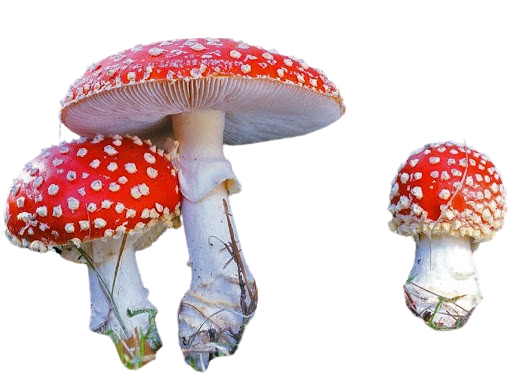
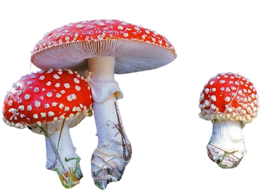

Descripción morfológica
Amanita muscaria, comúnmente conocido como "matamoscas" o "falsa oronja", es un hongo basidiomiceto de la familia Amanitaceae. Su sombrero (8-20 cm de diámetro) es inicialmente globoso, luego convexo y finalmente plano, de color rojo escarlata intenso con verrugas blancas (restos del velo universal). Las láminas son libres, blancas y apretadas. El pie (10-20 cm de altura) es blanco con un anillo membranoso y una volva basal en forma de copa. La carne es blanca, frágil y no cambia de color al corte.
Características distintivas
- Pigmentación: Rojo muscarínico (debido a muscarufina) con verrugas algodonosas.
- Velos: Restos del velo universal forman las verrugas; velo parcial deja anillo.
- Esporas: Elipsoidales, lisas, 9-13 × 6.5-9 µm, blancas en masa.
- Variaciones: Forma formosa (amarillo-anaranjada) y alba (blanca).
Distribución y hábitat
Especie cosmopolita que forma micorrizas con coníferas (pinos, abetos) y árboles caducifolios (abedules, hayas). Abunda en bosques boreales y templados del hemisferio norte, introducido en el sur con plantaciones de pinos. En España aparece en pinares de montaña (Pirineos, Sistema Central). Fructifica de verano a otoño, a menudo en grupos de hadas. Su presencia indica suelos ácidos (pH 4-6) y ecosistemas poco alterados.
Ecología especializada
- Micorrizas: Asociación obligada con raíces de árboles (intercambio nutrientes).
- Dispersión: Especies acompañantes como ardillas contribuyen a esparcir esporas.
- Bioindicador: Sensible a contaminación por metales pesados.
Bioquímica y toxicidad
Contiene varios compuestos neurotóxicos: ácido iboténico (precursor del muscimol), muscarina (en bajas concentraciones) y muscazona. El muscimol actúa como agonista del GABA, causando efectos psicodélicos (alteraciones visuales, percepción del tiempo). La intoxicación provoca síntomas en 30-90 minutos: náuseas, mareos, seguidos de fase de excitación y luego depresión del SNC. La dosis letal es extremadamente alta (~15 sombreros), pero su consumo no se recomienda por efectos impredecibles.
Mecanismos tóxicos
- Ácido iboténico: Neuroexcitatorio (degenera neuronas al metabolizarse a muscimol).
- Muscarina: Activa receptores colinérgicos (0.0003% en A. muscaria vs 1.8% en A. pantherina).
- Muscimol: Psicodélico (5-10 mg causan efectos alucinógenos duraderos).
Historia y usos tradicionales
| Cultura | Uso documentado |
|---|---|
| Siberia | Chamanismo (consumo en rituales de comunicación con espíritus) |
| Vikingos | "Berserker" (posible ingrediente de poción para entrar en batalla) |
| Europa medieval | Método para matar moscas (sumergido en leche) |
Identificación y especies similares
- Amanita caesarea: Sombrero naranja sin verrugas, láminas y pie amarillos.
- Amanita rubescens: Rosado al corte, sin anillo bien definido.
- Russula emetica: Sin anillo ni volva, carne quebradiza.
Estado de conservación
No considerado amenazado globalmente, pero protegido en algunos países (como Hungría) por su importancia cultural. La recolección excesiva para uso recreativo en zonas turísticas está regulada en áreas naturales protegidas. Su dependencia de bosques maduros lo hace sensible a la deforestación.
Medidas de protección
- No recolectar ejemplares en parques nacionales.
- Fotografiar in situ sin dañar el micelio subterráneo.
- Educar sobre su toxicidad para prevenir intoxicaciones.
Curiosidades
- Inspiró el diseño de los hongos en Super Mario Bros y obras de Lewis Carroll.
- En la cultura pop se asocia erróneamente con hongos "mágicos" (que son Psilocybe).
- Su imagen aparece en decoraciones navideñas escandinavas como símbolo de buena suerte.